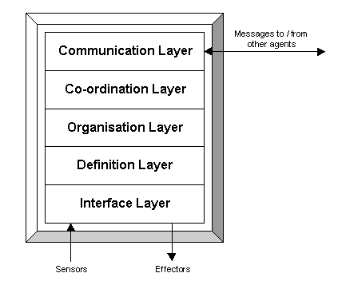

The Zeus Agent Building Toolkit |
The Application Realisation Guide |
| Contents | Introduction | Ontologies | Building Task Agents |
Utility Agents | Task Agent Configuration |
Agent Implementation |
The agent realisation process follows the design stage of the ZEUS agent development methodology. During the course of this guide the realisation process will be methodically described as a series of development stages, each of which consists of individual activities that implement particular aspects of an agent.
A prerequisite for using this document is a design for the application being realised. In addition the developer should know when and how to perform the necessary activities. We have tried to capture this expertise in the Case Studies document, which provides worked examples that we feel best illustrate how to implement working agent applications.
But before we consider how to implement an agent, we need to consider the conceptual basis of agents created with the ZEUS toolkit.
At the highest level of abstraction, the ZEUS agent design approach requires developers to view an agent as a five-layered entity, as illustrated in Figure 1.1 below.
|  |
Figure 1.1: The Conceptual Structure of a ZEUS Agent
From the bottom up, these layers are:
an interface layer, which enables the agent to be linked to the external programs that provide it with resources and/or implement its competencies
a definition layer, where the agent is viewed as an autonomous reasoning entity
an organisation layer, where the agent is viewed in terms of its relationships with other agents
a co-ordination layer, where the agent is viewed as a social entity that interacts according to its known protocols and strategies
a communication layer, which implements the protocols and mechanisms that support inter-agent communication
The Interface layer receives input via its sensors and is able to change the outside world through its effectors. For instance, a sensor could receive instructions from a GUI or act by modifying a database, thus providing physical realisations of the agents' resources and skills. As the sensors and effectors are external to the agent, configuration of the Interface layer consists of specifying interfaces between them and the agent.
At the Definition layer the agent is viewed as an autonomous rational entity, in terms of its reasoning abilities, goals, resources, skills, beliefs and preferences. As this layer is physically realised by classes from the ZEUS Agent Component library, (described in the Technical Manual), this stage of the methodology involves the configuration of these components.
At the Organisation layer the agent is viewed in terms of its relationships with other agents. This introduces the concept of an agency - a group of related agents. Agencies may be real, in that they are related by virtue of common attribute, such as being part of the same company. Or agencies may be virtual, in that their constituents share a co-operation agreement. Thus this stage of the methodology involves configuring the agent in terms of the agency it belongs to, what roles it plays with the agency, what other agents it is aware of, and what abilities it knows others possess.
At the Co-ordination layer the agent is considered to be a social entity, hence this stage involves configuring it for the desired forms of social behaviour. This is achieved by equipping it with the appropriate negotiation protocols and strategies.
The Communication layer provides a transport protocol and language enabling agents to send messages to each other. For compatibility this layer should be the same in each agent, and so there no need for developers to configure this layer.
This document will explain the process by which this conceptual agent is configured into functional member of a multi-agent society. This configuration process will be accomplished using the ZEUS Agent Generator tool, which will ultimately generate the agent source code. The developer need only implement the agents' application-specific functionality, and link it to the agents using the interfaces provided.
The objective of this process is to realise working agent implementations from conceptual designs created during the previous stage. The agent realisation process consists of several stages, (some of which have been derived from the levels of abstraction that exist within a ZEUS agent as shown in Figure 1.1). The stages and the order in which they should be attempted are:
Stage 1: Ontology Creation
Before implementing any agents the developer must define the application ontology: the declarative knowledge that represents the significant concepts within the application domain. The tool used to enter this information is the ZEUS Ontology Editor. Or alternatively, an existing ontology can be imported.
Stage 2: Agent Creation
During this stage the generic ZEUS agent is configured to fulfil its application-specific responsibilities, returning in a task agent. This process involves the ZEUS Agent Editor to complete up to four sub-stages (depending on the nature of the agent); these are:
Agent Definition - where its tasks, initial resources and planning abilities are specified
Task Description - where the applicability and attributes of agent activities are specified
Agent Organisation - where the social context of each agent is specified
Agent Co-ordination - where each agent is equipped with the social abilities for interaction
Stage 3: Utility Agent Configuration
Whereas the previous section concerned the agents who performed the application-specific activities this stage defines the attributes of the utility agents who provide the support infrastructure for the agent society. This information is entered through the Code Generation Editor in readiness for the creation of the utility agents.
Stage 4: Task Agent Configuration
This stage enables the runtime parameters of the task agents to be specified. This involves supplying information such as the host machines the agents will run on, and the external resources and programs to which the agents will be linked.
Stage 5: Agent Implementation
At this stage the Code Generator can be invoked and agent source code automatically generated. This leaves the developer with the job of providing the application-specific implementations of the tasks, external resources, programs (such as agent user interfaces) and interaction strategies. When this stage has been completed the application is ready to be run.
Each of these stages is the subject of the remaining sections of this document. Each section contains various activities that describe how to configure aspects of the generic ZEUS agent. For instance, the Co-ordination section describes how to solve the problem of engaging in a dialogue with another agent (the solution being to equip agent with an appropriate co-ordination protocol).
These problem/solution entries are referred to in the Case Studies that accompany the Role Modelling Guide. If you are reading this document for the first time it is recommended that you read this guide and one of the associated case studies before proceeding further.
All the stages of the realisation process are achieved through the ZEUS Agent Generator tool. The Generator is run through the Java runtime environment, which should be version 1.2 or later (due to the class libraries required). The presence of a JRE can be easily tested by typing 'java -version' into your machine's command line, if it is installed correctly you will see a message reporting the version of the JRE installed on that machine. Otherwise you will need to install the JRE (or make it accessible) before proceeding.
You should also ensure that the JRE's CLASSPATH environment variable contains a reference to the directory that contains the zeus class package. The state of this variable can be seen by typing SETENV on UNIX machines, or SET on PCs. There should also be a ZEUS properties file in the appropriate location, (for more detailed instructions, see the Installation guide).
Now start the Generator by entering the following command:
java zeus.generator.AgentGenerator
If ZEUS has been installed properly a window should appear entitled 'ZEUS Agent Generator'. If not, consult the trouble-shooting section of the installation guide.
The Generator window serves as the launching point for the various agent building windows, it consists of four panels that enable access to its functions, namely:
Project Options - this panel contains a toolbar of management options, enabling whole projects to be loaded, saved and cleared. The other buttons launch the Society Viewer and Code Generator tools. Beneath is the filename of the project currently in memory.
Ontology Options - this panel provides access to the Ontology Editor tool, enabling ontologies to be loaded, saved, cleared and edited. The name of the ontology currently in memory is shown beneath the toolbar.
Agent Options - this panel consists of a toolbar and a table that lists all the agents in the currently loaded project. The options available from here are described in Section 3.
Task Options - this panel consists of a toolbar and a table that lists all the tasks in the currently loaded project. The options available from here are also described in Section 3.
The subsequent sections describe how the facilities of the Generator tool support the stages of the ZEUS agent creation methodology.
| Contents | Introduction | Ontologies | Building Task Agents |
Utility Agents | Task Agent Configuration |
Agent Implementation |